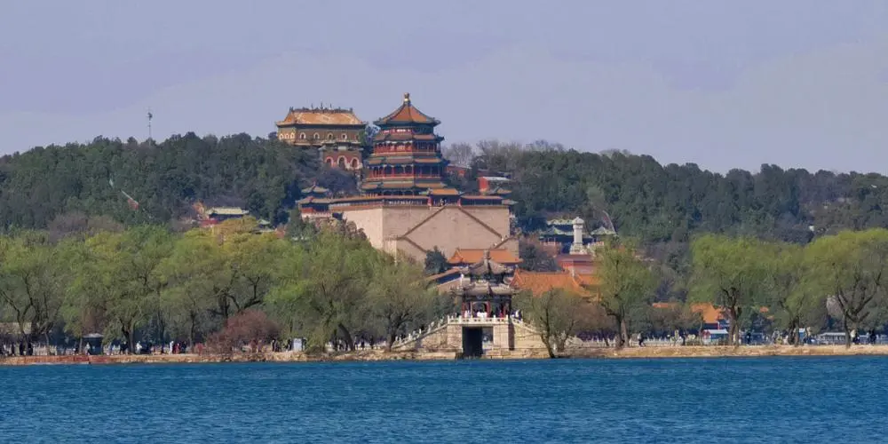

The Summer Palace
From： baike.baidu.com

In the fifteenth year of Qianlong of the Qing Dynasty (1750 AD), in order to celebrate the 60th birthday of his biological mother, the Qianlong Emperor built imperial gardens in Wengshan and West Lake in the western suburbs of Beijing, and renamed Wengshan "Wanshou Mountain", which means "long life without boundaries". The West Lake was renamed "Kunming Lake", and a number of Jiangnan beautiful scenery were built in the park, thus becoming the Qingyi Garden, the predecessor of the Summer Palace. In the 12th year of Guangxu of the Qing Dynasty (1886 AD), Cixi decided to rebuild the Qingyi Garden, which had been badly damaged in the Second Opium War, in order to build a place for retirement. In the 14th year of Guangxu of the Qing Dynasty (1888 AD), the Guangxu Emperor decreed that the Qingyi Garden be renamed the Summer Palace as the place where the Empress Dowager retired.
The architecture of the Summer Palace includes almost all the forms of classical Chinese architectural individuals, such as halls, fangs, buildings, pavilions, corridors, archways, etc., which can be said to be the culmination of Qing Dynasty official architecture. The Summer Palace is also known as the "Royal Garden Museum". The Summer Palace is mainly composed of two parts, Wanshou Mountain and Kunming Lake.
Wanshou Mountain belongs to Yanshan Mountain and is 58.59 meters high. The building complex is built along the mountain, from the "Yunhui Yuyu" archway at the foot of the mountain, through Paiyunmen, Ergongmen, Paiyun Hall, Dehui Hall, Foxiang Pavilion, and finally to the Wisdom Sea at the top of the mountain, forming a central axis that rises layer by layer. The front mountain of Wanshou Mountain, centered on the eight-sided, three-story four-eaves Foxiang Pavilion, forms a huge main building complex. The back mountain has magnificent Buddhist buildings from the four continents of Tibet and colorful glazed pagodas standing among the trees. Surrounded by Houhu and Suzhouhe at the foot of Houshan, the famous "Royal Trading Street" on the bank of Suzhouhe is Suzhou Street. This is a trading street built in imitation of Suzhou, a water town in Jiangsu Province, and is a water street specially for Qing Dynasty emperors to travel.
Kunming Lake is divided into three waters of different sizes by the West Causeway and its branch embankments, and each with a lake island, from east to west are Nanhu Island, Zaojiantang and Zhijingge. Nanhu Island is the largest lake island and the 17-hole bridge connects it to the embankment. There are also six bridges built on the West Causeway, from north to south, Jiehu Bridge, Youfeng Bridge, Yudai Bridge, Jing Bridge, Lian Bridge and Liu Bridge. The six bridges have different shapes and beauty.
 330445074@qq.com
330445074@qq.com